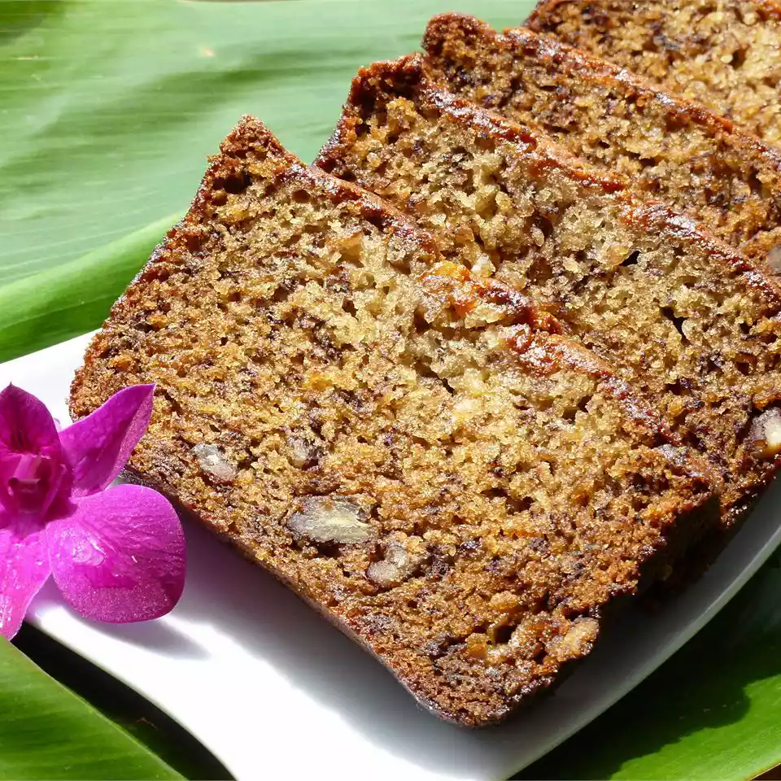

Banana Bread

Description
Banana breads are a great recipe and an updrage from the regular plain bread recipe,
this adds a mix of banana taste to your bread together with
a mix of cruchy peacans to go with.
Ingredients
- 2 large eggs, beaten
-
- 1 cup mashed bananas
- ½ cup vegetable oil
- ⅓ cup buttermilk
- 1 ¾ cups all-purpose flour
- 1 ½ cups white sugar
- 1 teaspoon baking soda
- 1 teaspoon baking soda
- ½ teaspoon salt
- ½ cup chopped pecans (Optional)
Steps
- Preheat the oven to 325 degrees F (165 degrees C). Grease a 9x5-inch loaf pan.
- Mix eggs, bananas, oil, and buttermilk together in a large bowl until well combined.
- Sift flour, sugar, baking soda, and salt into a separate large bowl.
Stir flour mixture into the banana mixture until combined.
Gently fold in pecans; pour batter into the prepared loaf pan.
- Bake in the preheated oven until a toothpick inserted in the center comes out clean,
1 hour and 20 minutes.